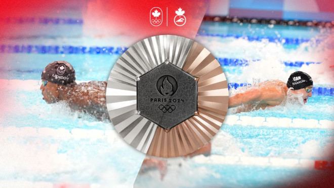
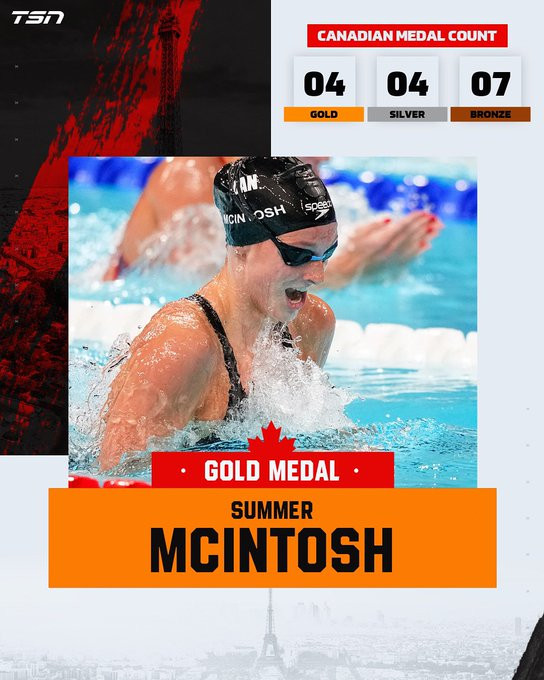

多伦多17岁游泳天才少女Summer McIntosh在本届奥运会女子200米个人混合泳比赛中赢得了她的第三枚金牌，并打破纪录。
McIntosh此前已经在女子200米蝶泳和400米个人混合泳比赛中夺得金牌，同时她还在400米自由泳比赛中获得银牌。
更令人印象深刻的是，她的所有金牌都来自个人项目。在今天的比赛中，她以2分06秒56的成绩打破了第二项奥运纪录。
McIntosh在比赛中的表现非常出色：在前50米时，她处于第二位，但在仰泳项目中迅速发力，轻松领先半程。在第三段后她略微退居第二，但在自由泳段她全力冲刺，最终夺得金牌。
今天是加拿大游泳队的丰收日，就在她夺金的几分钟前，她的两名男队友Josh Liendo和Ilya Kharun在男子100米蝶泳比赛中分别获得银牌和铜牌。这是自1976年以来，两名加拿大选手首次在奥运会个人项目的领奖台上同时亮相。

图源：olympic.ca
凭借三枚金牌和一枚银牌，McIntosh成为了加拿大历史上单届奥运会获得奖牌最多的运动员。她的四枚奖牌数量仅次于速滑名将Cindy Klassen，后者在2006年都灵冬奥会上共获得五枚奖牌。
不仅是奖牌数量令人瞩目，她的表现方式同样令人惊叹。美国传奇泳将迈克尔·菲尔普斯从未在混合泳比赛中失利，他的23枚奥运金牌中，有六枚来自200米或400米混合泳。McIntosh在本周早些时候的400米混合泳比赛中表现出色，此次200米混合泳是她首次在重大国际比赛参加该项目。
McIntosh有望超越队友Penny Oleksiak在奥运会上七枚奖牌记录，其中Oleksiak只有一枚是金牌。

图源：tsn